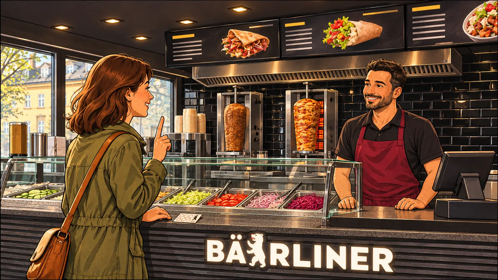

Ein Hinweis zählt, sobald er im Chat erscheint. Wiederholungen zählen nicht doppelt. Beim Neuladen beginnt der Zähler neu.
DIE STEMPELKARTE · EIN KAUF NACH DEM ANDEREN
Deine Treue wird belohnt.
Lies die Sprechblasen mit Weiter und Zurück. Entdecke die Stempelkarte. Frag Bonnie zur aktuellen Szene und bearbeite deinen Laufzettel.
0 von 4 Szenen entdeckt

Erfundener Unterrichtsfall: Stempelregel, Einkäufe und Erreichbarkeit sind keine geprüften Angaben zum realen Betrieb. Das bereitgestellte Foto dient als Gestaltungsvorlage.